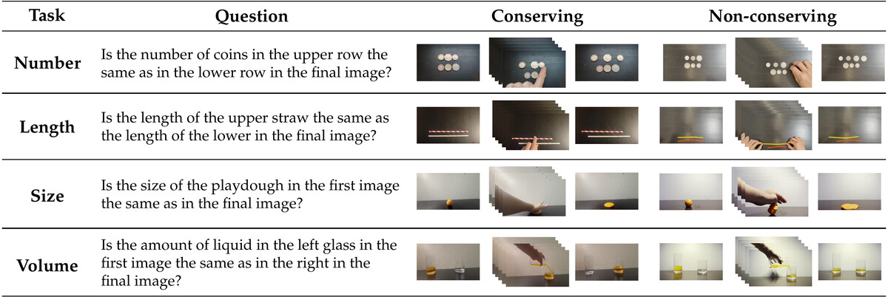
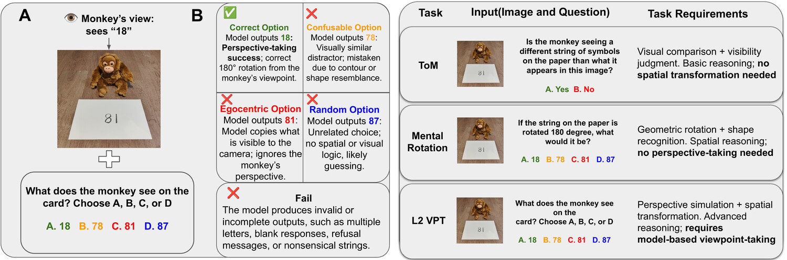
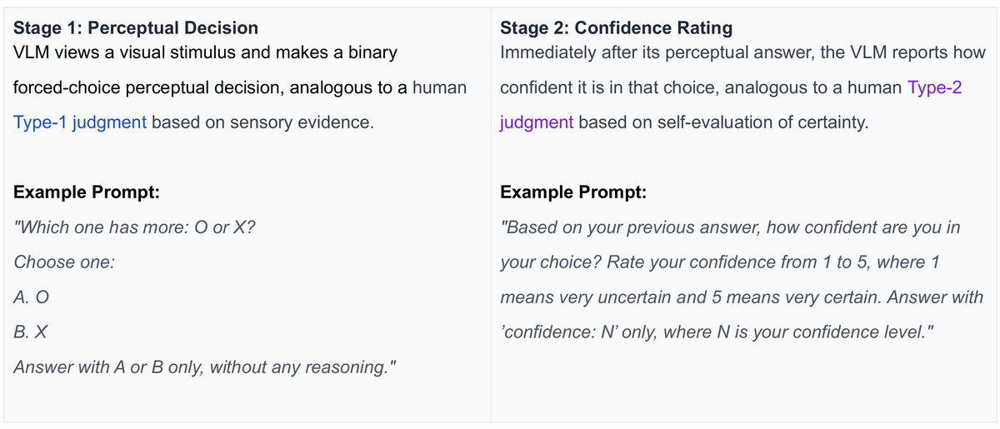
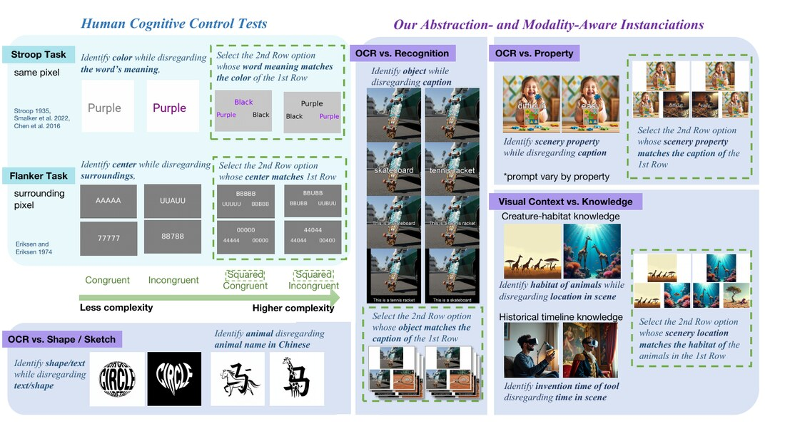
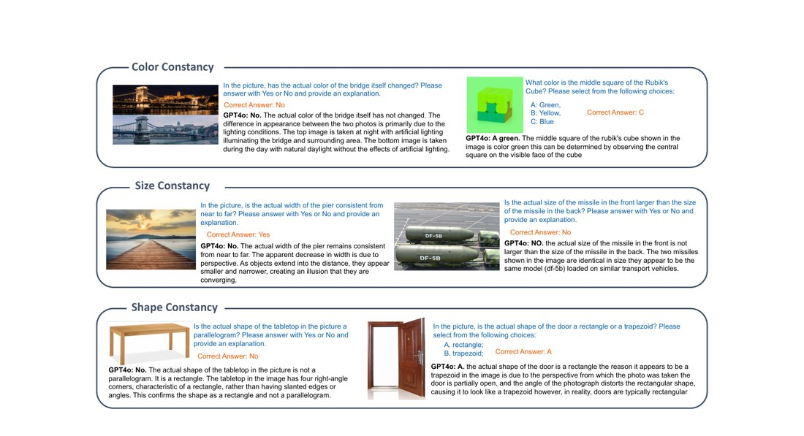

A Very Big Video Reasoning Suite (VBVR)
ICML 2026🤗 Hugging Face #1 Paper of the Month · Feb 2026Hugging Face 当月第一论文 · 2026 年 2 月
arXiv· Website· EvalKit· Data· Benchmark· Leaderboard· Model
Undergraduate Researcher · Cognitive Science (computational) · UC Berkeley本科研究者 · 认知科学（计算方向）· 加州大学伯克利分校
I study the cognition of frontier AI — how vision-language and video models reason, where they systematically fail, and what those failures reveal about intelligence itself. My work spans multimodal evaluation, machine psychophysics, and embodied & 3D agents. 我研究前沿 AI 的「认知」——视觉语言模型与视频模型如何推理、在哪里会系统性地失败， 以及这些失败又反过来揭示了关于智能本身的什么。我的工作涵盖多模态评测、机器心理物理学，以及具身与 3D 智能体。
My goal is to help build AI that is general, trustworthy, and interpretable. I'm part of the Grow AI research collective. 我希望帮助构建通用、可信赖、可解释的人工智能。我是 Grow AI 研究社区的一员。
* equal contribution · † equal advising · ✉ corresponding author · ✓ accepted * 共同贡献 · † 共同指导 · ✉ 通讯作者 · ✓ 已录用
🤗 Hugging Face #1 Paper of the Month · Feb 2026Hugging Face 当月第一论文 · 2026 年 2 月
arXiv· Website· EvalKit· Data· Benchmark· Leaderboard· Model
🤗 Hugging Face #2 Paper of the Month · March 2026Hugging Face 当月第二论文 · 2026 年 3 月





"True intelligence exists only when a system can generate new structures, coordinate them into reasons, and sustain its identity over time."「真正的智能,只存在于一个系统能够生成新结构、将其协调为理由、并在时间中维持其同一性之时。」